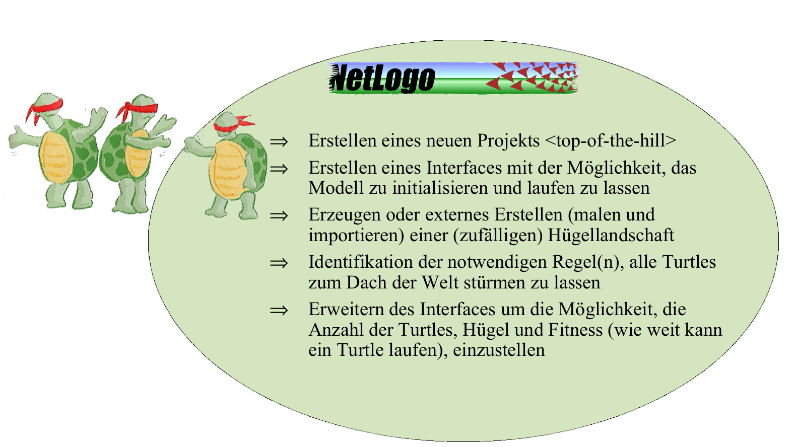
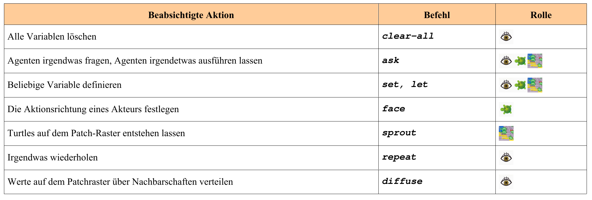

Challenge One - Beschleunigter Einstieg in die Modellierung
Die erste Programmierübung soll anhand eines einfachen Beispiels zeigen, wie Konzepte effektiv verknüpft werden können, um den recht komplexen Prozess zu operationalisieren.
Zunächst geht es um die Entwicklung der Motivation und der Fragestellung. Nach der Definition des Ziels folgen die zu untersuchenden Hypothesen. Zur Bearbeitung wird ein Konzept oder ein Wirkungsgraphen benötigt, der die funktionalen und regelhaften Zusammenhänge beschreibt.
Erst dann stellt sich die Frage “Wie programmiere ich das Ganze? Leider ist es nicht nur zu Beginn der wissenschaftlichen Modellierung schwierig, diese Ebenen zu trennen und effizient zu bearbeiten. Ein Patentrezept gibt es nicht. Die Übung versucht einen praxisorientierten Weg aufzuzeigen. Lernziel ist die schrittweise Erweiterung und Verbesserung durch geschickte Anpassung von Beispielmodellen (Netlogo-Skripte) und die Erstellung eines eigenen Modells. Dabei ist es zu Beginn nicht unbedingt notwendig, den Programmcode vollständig zu verstehen (das kommt hoffentlich mit der Übung…), sondern es geht vielmehr darum, das Ergebnis des Programmcodes im Hinblick auf die Zielsetzung zu beurteilen.
Lernziele
Die übergeordneten Lernziele sind:

Schneller, besser, weiter, höher - Die Motivation
Die treibende Kraft unseres wissenschaftlichen Vorhabens in der Modellierung liegt in einem grundlegenden menschlichen Anreiz: dem Streben nach Exzellenz und dem Bestreben, individuelle Vorteile zu maximieren. Diese Motivation spiegelt sich treffend in dem bekannten Ausspruch von von Bülow wider: “Mit einem Worte: wir wollen niemanden in den Schatten stellen, aber wir verlangen auch unseren Platz an der Sonne”1. In unserer Untersuchung zielt der metaphorische “Platz an der Sonne” nicht auf geografische Orte wie Namibia oder Togo, sondern auf das Bestreben aller Beteiligten, im Sinne von Chris Stangl2 und Kollegen, die Herausforderung der “Seven Summits” zu bewältigen – ohne weitergehende Motivation als auf einem der höchsten Berggipfel zu stehen3.
Das primäre Ziel dieser Untersuchung besteht darin, alle beweglichen Agenten (Turtles) auf den höchsten erreichbaren Gipfel zu positionieren.
Herausforderung Eins - Problembeschreibung Unser wissenschaftliches Ziel besteht darin, die räumlichen Auswirkungen der postulierten Tendenz von Individuen zu analysieren, ihren Vorteil zu optimieren, was durch das Erreichen des höchsten Punktes im Raum ausgedrückt wird. Dies setzt voraus, dass das zu optimierende Gut (Vorteil) im Raum inhomogen verteilt ist. In einem Gebirge manifestiert sich diese Inhomogenität als ungleichmäßige Höhenverteilung; anderenfalls würde es sich um eine topographische Ebene handeln. Folglich besteht der Raum aus diskreten Zellen, die eine inhomogene Verteilung eines Parameters (Höhe, Nahrung, Geld, Liebe usw.) aufweisen. Zudem sind unsere Agenten (Turtles) als Einzelgänger konzipiert, die lediglich auf Grundlage ihrer individuellen Wahrnehmung des Raumes, ohne zwischenmenschliche Kommunikation, das Ziel verfolgen, einen Ort (Patch) von maximaler Höhe oder den höchsten Punkt zu erreichen. Dieser methodische Ansatz soll in einer hügeligen Landschaftsstruktur (Hügellandschaft) implementiert werden.
NetLogo Modellbibliothek - Ein effektiver Einstieg
Der Implementierungsprozess beginnt mit einer systematischen Identifikation der essenziellen Anforderungen aus der definierten Problemstellung. Der Begriff “Hügellandschaft” erfordert eine präzise Definition in Bezug auf ihre Beschaffenheit, Anzahl der Hügel, sowie die Population der Turtles, die die Welt “Top of the Hill” bevölkern.
Zusätzlich sind technische Überlegungen unabdingbar, darunter die sinnvolle Abfolge der Vorgehensweise und die Bestimmung der erforderlichen Einzelschritte.
Natürlich kann man jetzt sofort das Handbuch zur Hand nehmen und mit der Programmierung beginnen. Einfacher und meist zielführender ist es, sich anzuschauen, was es an Problemlösungen gibt. Netlogo bietet in der Model Library eine Vielzahl von Beispielmodellen und Codeschnipseln an. Alle sind sehr gut dokumentiert und zusätzlich im Quellcode kommentiert. Als Newbie sollte man hier unbedingt stöbern. Am besten (weil am einfachsten aufgebaut) beginnt man die Suche bei den Codebeispielen. Dort springt einem das Hill Climbing Example ins Auge. Im Intro heißt es: „This example shows how to make turtles climb hills -- or descend into valleys -- using the UPHILL, UPHILL4, DOWNHILL, and DOWNHILL4 commands. The same technique is useful for modeling any kind of creature that follows a gradient in its environment”.**
Offensichtlich eine ideale Vorlage für unser Problem. Hier also die konkrete Aufgabenstellung:
Erweiterung des Hill Climbing Examples
Was ist zu tun? Im Kasten werden konkrete Hinweise für ein sinnvolles Vorgehen gegeben. Es werden die bereits vorhandenen und die noch fehlenden Elemente benannt und gleichzeitig ein neues Projekt angelegt.

Diese Schritte werden weiter unten im Detail erklärt.
Erschaffung der Welt
Wie in jeder guten Schöpfungsgeschichte ist es sinnvoll, zunächst die Welt zu erschaffen (= den Modellraum zu definieren). Beim Anlegen eines neuen Projektes wird eine Standardumgebung erzeugt (siehe Netlogo Tutorial 1,2,3). Diese sollte entsprechend dem Modellzweck (in diesem Fall Standard/Default) angepasst werden (Tutorial 1->Controlling the View).
Hinweis: Da man in Netlogo nicht direkt (wie in einem rasterbasierten Grafikprogramm) die Patches „malen” kann, muss man dies entweder programmieren oder eine bestehende „Welt” laden.
Für die hier gestellte Aufgabe erscheint die Programmierung einer einfachen Setup-Prozedur sinnvoll. Betrachtet man die Anforderungen, so sind folgende Kriterien zu berücksichtigen:
- Festlegung einer bestimmten Anzahl von Gipfelpunkten
- Zuordnung von Höhenwerten zu diesen Punkten
- Erzeugung von Talstrukturen zwischen diesen Gipfeln (unter Verwendung der Höhenwerte)
- Visualisierung der “Landschaft
Aufgabe: Analysiere den Quelltext des Hill Climbing Examples
- Welche Strukturen sind vorhanden, welche werden noch benötigt?
Im Prinzip liefert das Hillclimbing Example sowohl World als auch Turtles. Wir müssen nur einige Anpassungen vornehmen. Nach der Analyse sollten die folgenden Fragen relativ einfach zu beantworten sein:
- Wie funktioniert der Befehl diffuse? Können damit kontrollierte Höhenwerte erzeugt werden?
- An welcher Stelle des Skripts muss eine Variable eingefügt werden, um die Anzahl der Schildkröten mit einem Schieberegler einstellen zu können?
- An welcher Stelle muss dies für die Anzahl der Hügel geschehen?
- Wie kann über das Interface eingestellt werden, ob die Turtles ihren Weg markieren (pen-up, pen-down)?
Die Schildkröten
Eigentlich geht es erst jetzt darum, Turtles in diese Welt zu setzen. Es gilt ein möglichst einfaches Regelwerk zu finden, das die Turtles dazu bringt, immer nach oben zu streben. Folgende Kriterien sind zu berücksichtigen
- Festlegung einer bestimmten Anzahl von Turtles
- Implementierung einer geeigneten Wahrnehmung des Kriteriums “Höhe des Patch
- Umsetzung der Information, um den höchsten Punkt zu erreichen
- Visualisierung
Als Vorbild dient auch hier das Beispiel Hill Climbing aus der Programmbibliothek. Im Lösungsskript ChallengeOneBasic wird jedoch bewusst auf die Funktion uphill verzichtet.
Warum? Netlogo verfügt über eine oft unübersichtliche Vielzahl bereits implementierter Funktionen (sog. Primitive). Anhand der Unterschiede zwischen uphill und dem verwendeten max-one-of neighbors soll das der Netlogo-Programmierung zugrunde liegende Konzept von Befehlen, Funktionen und Primitiven4 von Anfang an besser verstanden werden.
uphill (Hillclimbing Example) ist ein Beispiel für eine komfortable existierende Funktion, da sie, wie in der Hilfe zu lesen ist, mehrere Befehle in einem Schritt ausführt:
„[it] moves the turtle to the neighbor patch with the highest value **for patch-variable”..
Das heißt, uphill identifiziert die (1) „Was ist die Nachbarschaft? (2) Was ist der höchste Wert in der Nachbarschaft? und (3) bewegt die Turtle dorthin. Da Agenten (Turtles) sich oft entlang eines Gradienten bewegen müssen, ist es sinnvoll und hilfreich, eine solche Funktion in Netlogo zu haben. Die gleiche Funktion ist jedoch nicht hilfreich, wenn z.B. differenziert entschieden werden muss, ob in Richtung des höchsten oder zweithöchsten (etc.) Wertes gegangen werden soll und ob dann 1, 2 oder *n Schritte weiter gegangen werden soll oder ob z.B. sofort zu diesem Punkt gegangen werden soll.
Die Unterschiede zu max-one-of neighbors werden deutlicher, wenn man sich das Beispielprogramm Neighborhoods Example genauer ansieht.Für solche Zwecke ist der Befehl max-one-of neighbors besser geeignet. Er analysiert flexibler beliebige räumliche Merkmale in der Nachbarschaft. max-one-of bzw. min-one-of sucht nach dem höchsten bzw. niedrigsten Wert eines sogenannten agentsets. Das Agenset kann eine beliebige (auch frei definierte) Auswahl (Gruppe) von Agenten sein (z.B. neighbors oder spezielle Gruppen von Turtles etc.).
Neighbors ist, vergleichbar mit uphill, eine spezialisierte Funktion, die die Werte in der vollständigen Patch-Nachbarschaft (von Neumann’sche neighbors4, Moor’sche neighbors) mit einem Befehl „abfragt”. Da die Nachbarn Patches (= immobile Agenten = ein Agentensatz) sind, kann neighbors einfach an max-one-of angehängt werden. Als Ergebnis liest sich der Befehl wie in menschlicher Sprache. Diese Vorgehensweise, sowohl beim Zusammensetzen von Befehlen als auch beim schrittweisen Ersetzen von allgemeinen Befehlen/Funktionen durch komplexere Funktionen, ist LOGO-spezifisch und sollte verstanden und geübt werden.
Natürlich zeigt das Beispiel ChallengeOneBasic, dass es nicht sinnvoll ist (wie oben aus didaktischen Gründen gemacht), Turtles und Patches während der Implementierung getrennt zu betrachten. Auch hier sei zum besseren Verständnis auf die Beispielprogramme verwiesen Im Zusammenhang mit ChallengeOne sind die folgenden Codebeispiele sowohl für spezifische Lösungen als auch für Programmierkonzepte in Netlogo von besonderer Bedeutung:
- Grid Nachbarschaft erkunden:
- Moore & Von Neumann Example
- Vision Cone Example
- Visualisierung von Daten:
- Plot Axis Example
- Direkte Kommunikation zwischen Agenten:
- Communikation-T-T Example
- Communikation-T-P Example
Verwendete Strukturen und Befehle im Skript ChallengeOneBasic
In Tabelle 1 sind die Befehle beispielhaft aufgelistet. Unter Intended Action ist in normaler Sprache skizziert, was mit dem Befehl erreicht werden soll, während unter Role das unbedingt zu berücksichtigende Akteurskonzept von Netlogo dargestellt ist (siehe auch Tutorial #2: Commands). Für die eigenen Aktivitäten, um z.B. die Verarbeitung der Vorschläge umsetzen zu können, hilft nur die konsequente Nutzung des NetLogo Programming Guides und des NetLogo Dictionaries. Ganz wichtig für das Erlernen von Netlogo ist natürlich das „Abschauen” von Lösungen aus Modellen der Model Library.
Gerade als Anfänger sollte man sich nicht davon verwirren lassen, dass viele Befehle miteinander kombiniert werden können. So setzt sich z.B. max-one-of neighbors aus den einzelnen Primitiven max-one-of und neighbors zusammen. Viele Primitive können mit with erweitert werden (Achtung: mit oder ohne Bindestrich führt zu völlig anderen Ergebnissen). Also einfach im Command Center ausprobieren, was passiert, wenn man einen Befehl eingibt – im Gegensatz zur Realität kann nichts kaputt gehen. Eine meiner Meinung nach gelungene Zusammenstellung des Programmierkonzepts von Netlogo inkl. der Begriffsdefinition von Agenten, Prozeduren, Funktionen und Primitiven hat René Doursat für die Second Annual French Complex Systems Summer School erstellt. Hier werden alle notwendigen Konzepte klar strukturiert erklärt. Auf der Seite der Summerschool finden sich weitere interessante Beiträge verschiedener Autoren.
 Tabelle: Hinweise zu den verwendeten Befehlen
Das Skript ChallengeOneBasic ist auf GitHub verfügbar. Das Basic Script implementiert die Grundfragestellung und erweitert diese um Alternativen der Nutzenoptimierung (=Wegsuche).
Ein erster Einstieg kann auch über die Webversionen am Beispiel des ChallengeOneBasic-Skripts erarbeitet werden.
## Gipfelstürmer und Gipfelstürmerinnen und was?
Gipfelstürmer und was nun?
*ChallengeOneBasic ist erst der Anfang. Es gibt noch eine Reihe von offenen Fragen und Optimierungsbedarf. So ist z.B. die Visualisierung der Hügel und deren Formgebung noch nicht sehr ansprechend (oder gar naturnah…). Man könnte auch Informationen über den Zustand der Schildkröten sammeln und visualisieren oder speichern. In Anlehnung an die Einleitung könnte z.B. die aktuelle minimale, mittlere oder maximale Höhe des Agenten ein Maß für seinen Glückszustand sein (= je höher der Turtle, desto glücklicher). Ungeklärt ist in der vorliegenden Implementierung auch die Frage, ob und wie es erreicht werden kann, dass alle Turtles irgendwann auf dem höchsten Gipfel stehen (bleiben).
Zusammenfassung
Diese erste Programmierübung sollte einen ersten Einstieg in die Programmierung von Mensch-Umwelt-Systemen ermöglichen. Es wurde bewusst eine etwas zugespitzte Motivationsbasis gewählt, um zu zeigen, dass sich die eigentlichen Fragen erst stellen, wenn eine erste Abstraktion implementiert ist und die Ergebnisse interpretiert werden müssen. Gleichzeitig sollte das Grundgerüst der Entwicklungsumgebung Netlogo an einem sehr anschaulichen Beispiel verständlich gemacht werden.
Literatur
Grimm V. Berger U. Bastiansen F. Eliassen S. Ginot V. Giske J. Goss-Custard J. Grand T. Heinz SK. Huse G. Huth A. Jepsen JU. Jorgensen C. Mooij WM. Muller B. Pe’er G. Piou C. Railsback SF. Robbins AM. Robbins MM. Rossmanith E. Ruger N.(2006): A standard protocol for describing individual-based and agent-based models. Ecological Modelling. v198. 115-126. Issues 1-2, 2006, p. 115-126. https://doi.org/10.1016/j.ecolmodel.2006.04.023
Knoeri, C., Busch J & C. Bale Programming for researchers Netlogo, University of Leeds
Footnotes
Bernhard von Bülow in einer Reichtagsdebatte am 6. Dezember 1897. Zugriff 11/11/23↩︎
Chris Stangl Zugriff 11/11/23↩︎
Die Turtles Grafiken sind verändert und bearbeitet aus dem empfehlenswerten Buch von: Colella, V., E. Klopfer, and M. Resnick. 2001. Adventures in Modeling: Exploring Complex, Dynamic Systems with StarLogo. Teachers College Press.↩︎
Einen guten Überblick über die Struktur von Netlogo gibt das Netlogo Tutorial von René Doursat. Zugriff 23.11.11.↩︎